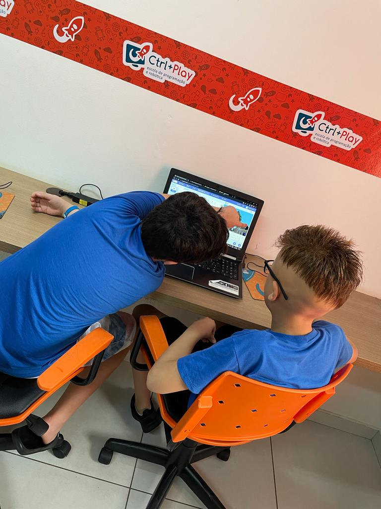
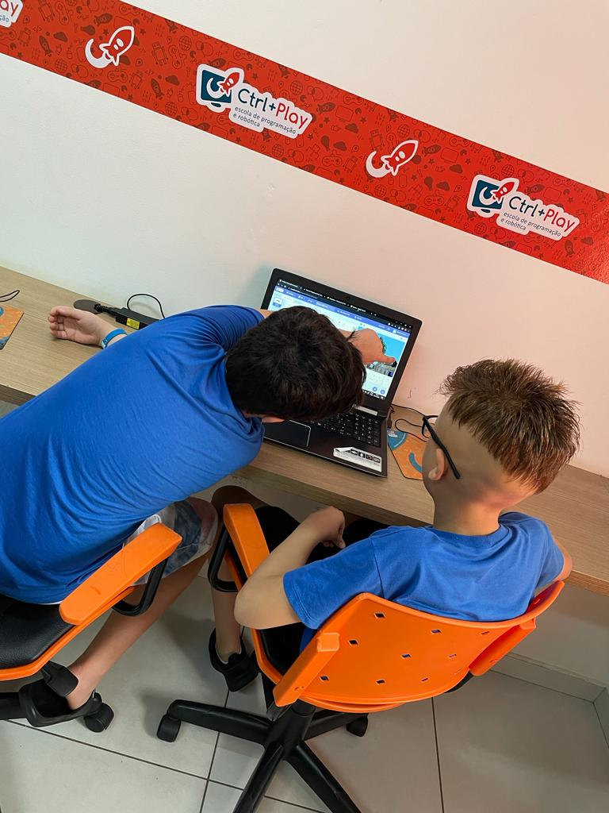

Os talentosos João Gabriel, Miguel Cardoso e Mathias Padovini uniram forças para criar um empolgante Jogo de Parkour no Scratch. A colaboração resultou em uma experiência única, onde suas habilidades e criatividade se destacam. O jogo reflete não apenas a competência técnica, mas também a capacidade de inovação desse trio dinâmico na plataforma.

 
